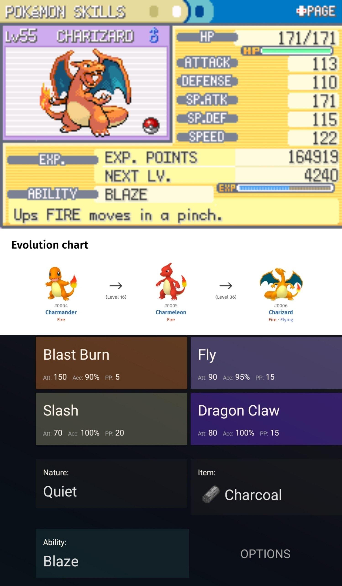

01
Чаризард
Уровень: 55
Характер: Quiet
Способность: Blaze
Предмет:Charcoal
Мой первый покемон,и по совместительству сильнейшее звено
Команды.Чаризард обладает внушительными параметрами,особенно спец.атакой.
С Усилением от Уголька,который от держит как предмет,буквально никто не переживёт
его атаку Blast Burn,при том,что это и без всего вышеописанного
сильнейшее специальное движение в моей команде .Драконий коготь в его наборе атак также инструментально,хоть и
полезно только в Лиге,потому что тренер покемонов Драконьего типа есть только там,
и это член Элитной Четвёрки Ланс.К тому же благодаря своей чудовищной скорости Чаризард почти всегда бьёт
Первым,и эта она ещё заниженная из-за Характера,зато взамен этот же Характер повышает и без того большую
Спец.Атаку.
Пожалуй,единственная его слабость-это вода и четырёхкратная слабость к Каменным атакам,но его физическая
защита всё равно на порядок выше рядового покемона,и Чаризард заслуживает звание покемона-чемпиона.
Плюс его способность,усиливающая огненные атаки,когда у Чаризарда меньше трети HP.

02
Голем
Уровень: 50
Характер: Hasty
Способность: Rock Head
Предмет: Leftvores
Голема я нашёл ещё когда тот был Джеодудом в Каменном Туннеле.Поймал я тогда торих таких,
чтобы найти того,у которого будет Способность Rock Head.Она убирает отдачу от таких приёмов как Take Down и
Double-Edge (покемон их использующий также получает треть нанесённого этими движениями урона).И как раз таки
Double-Edge одно из самых сильных физических движений в игре,и иметь его без отдачи-это всегда за здравье.
Голем единственный покемон женского пола в моей команде к слову (как забавный факт).
Характер у неё Нейтраьный,поэтому Параметры никак не видоизменены.Тут кстати наглядна разница в статах с
Чаризардом,ибо если тот просто монструозно сильный,то Голем жертвует нижней половиной статов в угоду
верхней.То есть это воин архетипа Танк-медленный и неповоротливый,но при этом бьёт как грузовик.
Предметом она держит Объедки,они позволяют Голему регенирировать 1/16 потерянных в бою HP в конце хода.
А учитывая её громадные Физ.Защиту и HP,её буквально не пробить.
Ради получения Голема пришлось подзапариться,ведь он эволюционирует только при обмене,пришлось подключать
отдельный эмулятор,чтобы обменяться с самим собой,но об этом ниже.
Эмуляция
Я играл в Pokémon LeafGreen с помощью эмулятора.
Эмуляция позволяет программному обеспечению воспроизводить
поведение другой вычислительной системы, благодаря чему
становится возможным запуск совместимых программ
на различном аппаратном обеспечении.
Эмуляция может сделать старые игры более доступными,
однако впечатления от игры могут зависеть от самого эмулятора,
его настроек и точности его
реализации.
Лично Я специально искал эмулятор,который позволит мне запустить одновременно
2 образа игры,и из-за того,что они запущены на 1 устройстве,игра считывала это как локальное подключение,
что и позволило мне провернуть фокус собменом.Не сделай я этого,мой Голем всё ещё был бы Гравелером и.вероятно,был
бы слабейшим звеном команды.
Wikipedia: Emulator

03
Вапореон
Уровень: 53
Характер: Quite
Способность: Water Absorb
Предмет: Mystic Water
В Целадон Сити на крыше жилого комплекса я забрал Иви,и развил его в Вапореона.
Иви мой самый любимый Покемон из всех кстати.
Это уникальный покемон,ибо если в моей игре у него сразу 3 координально разные эволюционные формы,
то сегодня их уже целых 8.Я выбрал Вапореона по трём причинам:
1.Водяные покемоны=всегда хорошо
2.Эволюции Иви (в простонароде Ивилюции) дикл сильные
3.Вапореон иметт большую Спец.Атаку и выживаемость,которую он до кучи может повысить
за счёт Способности Водная Подпитка,которая поглощает вражеские атаки Водного типа и лечит
за их счёт Вапореона.
Мистическая Вода,которую он держит,по принципу работы аналогична Угольку Чаризарда,только там Огонь,
а тут Вода.
Вапореон уникален и ценен ещё и своей атакой Укус Тёмного типа,ведь в условии отсудствия Тёмных и наличии
кучи Психических покемонов,Укус невероятно ценится среди покемонов в LeafGreen,а с огромной Спец.Атакой
Вапореона он сочитается невероятно хорошо.Ну и Ледяную атаку Метель тоже стоит упомянуть,хотя из-за
не 100% точности промахивается она чуть ли не каждый 2й раз.

04
Райчу
Уровень: 51
Характер: Timid
Способность: Static
Предмет: Magnet
Пикачу культовый покемон,не зря являющийся лицом всех франшизы.
И от того парадоксально,что о его эволюции почти никто не говрит,хотя это
по факту очень сильный Электрический покемон.Да,пускай Пикачу мне тоже нравится больше чем Райчу,
но отрицать факт того,что Пикачу невероятно слабый я не собираюсь.У Райчу очень низкие оба Параметра защиты,а у
Пикачу дела с этим обстоят ещё хуже.Чтобы адекватно играть с Пикачу,нужен предмет Light Ball,удваивающий атаку Пикачу,
Но его в этой игре нет.Впрочем,Райчу с Магнитом (который кстаи работает как Уголёк и Мистическая Вода) ничуть
не разочаровал меня.Да,не спорю,защита не лучшая,но его Спец.Атака,Скорость и гигантский потенциал убивать врагов
за 1 удар делает из него Архетип Стеклянная Пушка-очень хрупкий,но сильный боец,чья задача как можно быстрее
нанести удар.Ну если Райчу всё же ударят,то его Способность Статика наложит на оппонента паралич,что урежет
ему скорость.

05
Экзегуттор
Уровень: 52
Характер: Bashful
Способность: Chlorophyll
Предмет: Quick Claw
Экзегуттора я нашёл ещё Экзекьютом в Сафари Зоне-природном заповеднике,где есть возможность
заполучить уникальных Покеонов.Экзекьют и по совместительству Экзегуттор-сильнейшие
Травянные Покемоны в игре из-за своей комбинации типов.Так как большинство других Травянных
в Канто в добавок Ядовитые,Экзегуттор совим Психичесским STABом уделывает их всех.
Правда Экзегутор,как не иронично,в то же время и сам слаб к Яду,да и впринципе имеет ряд не
очень приятных аспектов с выживаемостью.Физ.Защита большая,но вот Специальная проседает,
да и скорость не впечатляет.Однако в отличие от спец защиты,пробелы в скорости легко
решаются Быстрым Когтем и его Способностью Хлорофилл,повышающей скорость ещё сильнее,
когда на поле действует эффект Солнце,которое он может поставить солнечным днём.Но солнце
так же ослабляет воду и усиливает огонь-главную слабость покемона пальмы.Зато Солнце забавно синергирует с
Атакой Солнечный луч,ведь без солнца ей нужно аж 2 хода:1й на подзарядку,а 2й на залп,под солнцем же Луч бьёт сразу.

06
Снорлакс
Уровень: 52
Характер: Lonely
Способность: Immunity
Предмет: Leftvores
На всю игру существует всего 2 Снорлакса,и оба выступают сюжетными заграждениями на пути,
которые не преодолеть,предварительно пухляша не разбудив.Он самый медленный в команде,но в то же
время самый живучий,оно и не мудрено с таким-то пузом.Согласно покедексу,его вес,при росте чуть более 2х
метров,достигает 460кг.С объедками,как у Голема,его никак нельзя будет убить,особенно Специальными атаками.
Грустно конечно,что мне попался Снорлакс со Способностью Иммунитет,которая всего лишь не позволяет его Отравить.
Если спросить меня,то его вторая возможная способность Густой жир (Thick Fat),делящая урон Огнём и Льдом по нему на 2,
куда выигрышнее.Но даже так Снорлакс очень сильный покемон